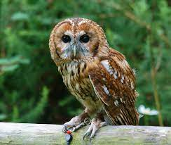

Kattugglan ser man nästan aldrig. Dom är bara vakna på natten. På dagen siter dom hopkurade och sover i ett ihåligt träd, i en övergiven lada, på en vind, där dom får vara ifred.
Men man hör dom ibland. oftast efter kalla nätter i mars, när vädret slagit om och blivit mildare. Då kan man höra hanens lite spöklika hoande i mörkret: "Hoou ... ho-ho-ho hoou". Det är hans sätt att säga: "Här är jag". Eller "kom till mig". Ibland svarar honan med ett ilsket "Njet!". Oftast gråbrun men kan också vara rödbrun.